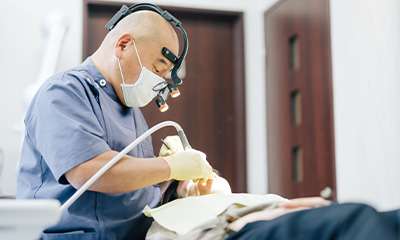
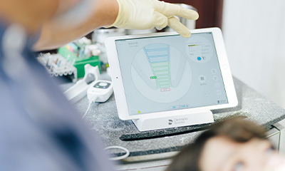
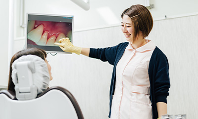

- 立川の歯医者「たけだなおや歯科クリニック」TOP
- 虫歯・歯周病治療
「大きな治療に至るまでにしない」ために、予防中心の診療をご提案する歯医者「たけだなおや歯科クリニック」。立川市で、なるべく削らない・神経を取らない治療を受けたいとお考えの方は、ぜひお早めに当院までご相談ください。
「痛い」「しみる」は
虫歯のサインかも？
～虫歯治療について～
「ダメージを抑えて、患者さんの負担を軽減」するためにできること

当院が大切にしているのは、できるだけ患者さんの歯を残して、健康な暮らしをサポートすること。そのために、できるだけ歯を「削らない」「神経を取らずに済む」治療に努めています。
また心・体両面の負担を軽減できるように、麻酔時の痛みにも十分に配慮。麻酔液を体温程度に温めることで痛みを軽減し、麻酔針を刺すときも、できるだけ痛みを感じにくい角度・方法で行います。電動麻酔器もありますが、当院では歯科医師の手で注射した方が痛みが少なく、時間もかからないと、そちらを希望する患者さんも多くいらっしゃいます。
精度の高い根管治療で、
患者さんの歯を守ります

進行した虫歯でも、歯を残して治療できるのが根管治療の大きなメリットです。しかし、虫歯の再発リスクを抑えるには、虫歯菌に冒された歯質をきちんと取りきることが大切。根管は細く複雑な形状のため、精度の高い治療が求められます。
だからこそ、根管治療はしっかりと時間をかけて経過を見届けるのが当院のこだわりです。そうすることで再発率を抑えられるため、多少時間がかかったとしても、患者さんにとってプラスの結果につながります。さらに最新の機器を使用し、根管内を傷つけず治療を行うことができます。
歯ぐきの腫れ・歯のグラつきが
気になっていませんか？
～歯周病治療について～
歯周病の症状と全身への影響
歯を失う原因となる歯周病。しかし、その影響はお口の中だけにとどまらず、全身にもさまざまな悪影響を及ぼすことがわかっています。
| 糖尿病 | 肺炎 | 心疾患 |
|---|---|---|
| 「歯周病があると糖尿病が進行しやすい」「糖尿病患者は歯周病になりやすい」という、相互関係があると指摘されています。 | 誤嚥によって歯周病菌が肺に入り込み、肺炎の原因となる可能性があります。 | 歯周病菌が血管に入ると動脈硬化を招きやすく、狭心症・心筋梗塞・脳卒中などのリスクが高まります。 |
| 早産・低体重児出産 | 認知症 |
|---|---|
| 歯周病菌が胎盤に悪影響を与えることがわかっています。また陣痛に近い筋肉収縮を招くことがあり、早産や低体重児出産のリスクが高まります。 | 動脈硬化による脳卒中や、咬むことの刺激不足による認知症へのリスクが高まります。 |
歯周病治療では、セルフケアとプロフェッショナルケアの両方が大切

歯周病はお口の中の歯垢に棲みついた歯周病菌が引き起こす病気です。そのため、お口の中に歯垢をできるだけ溜めないようにする「プラークコントロール」が治療においてもっとも重要です。一度歯垢を除去する治療を受けても、それだけでは歯周病は治らないのです。
歯周病の治療では、定期的に歯科医院に通って症状レベルに合った歯周病治療を受けること（プロケア）、さらに自分自身で日々ケアすること（ホームケア）の両方が欠かせません。
治療を行う歯科医師、ケアを担当する歯科衛生士、そして患者さん。この三者が力を合わせて治療に取り組むことが大切です。当院では、歯みがき指導などのセルフケアのサポートにも力を入れています。